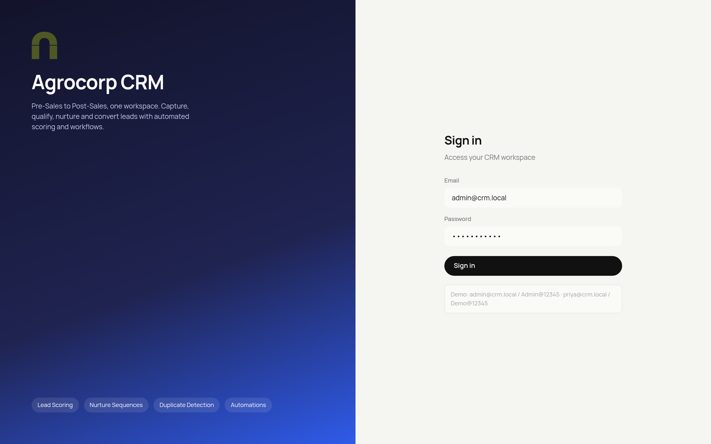
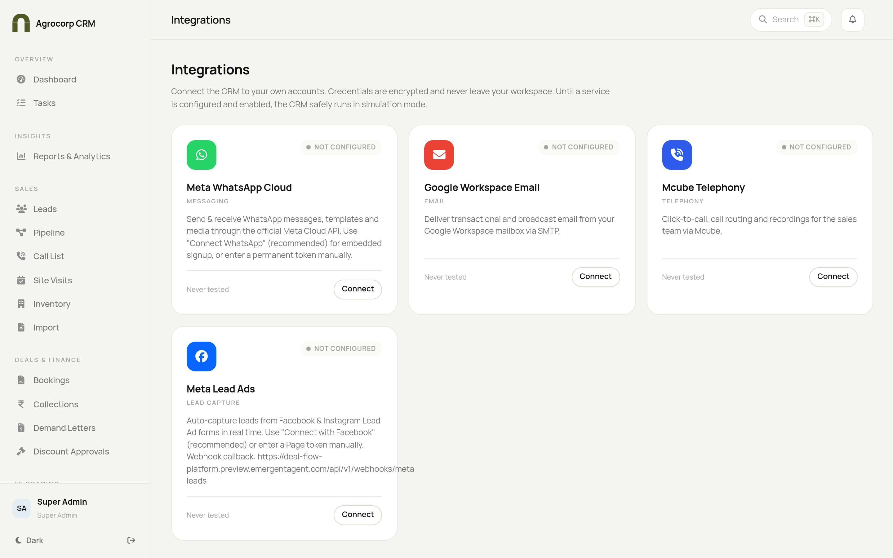
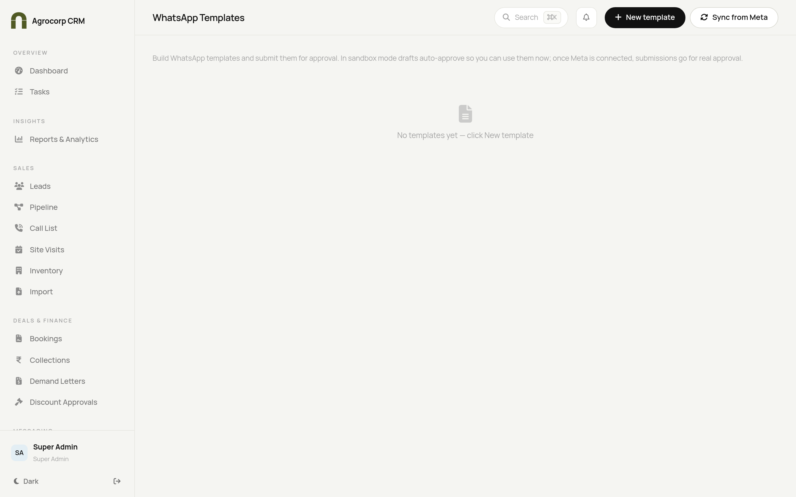
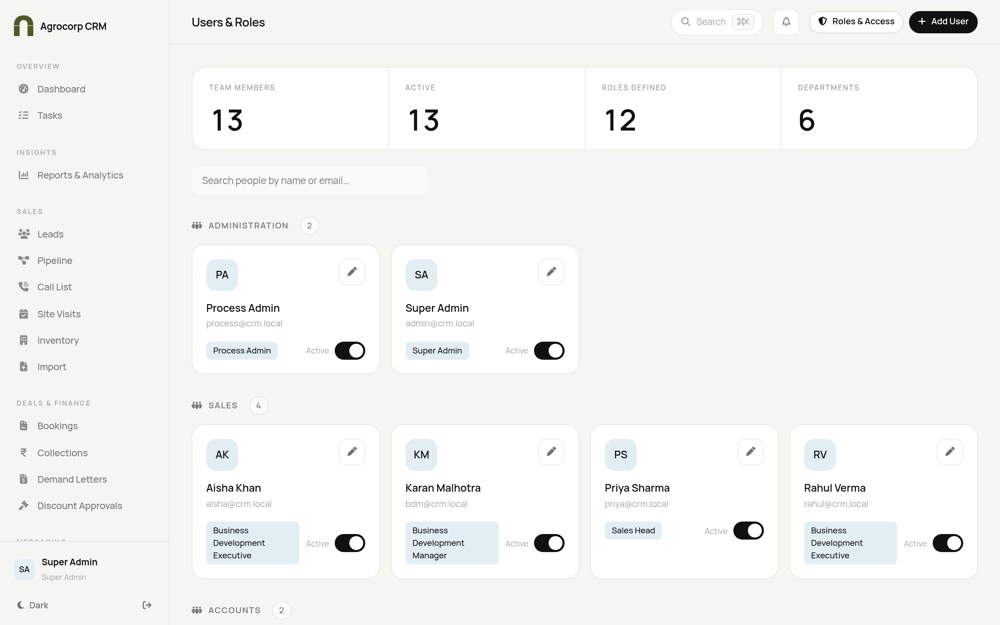
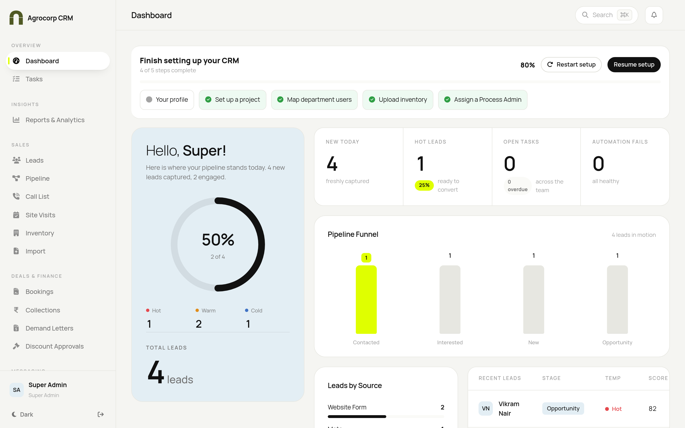
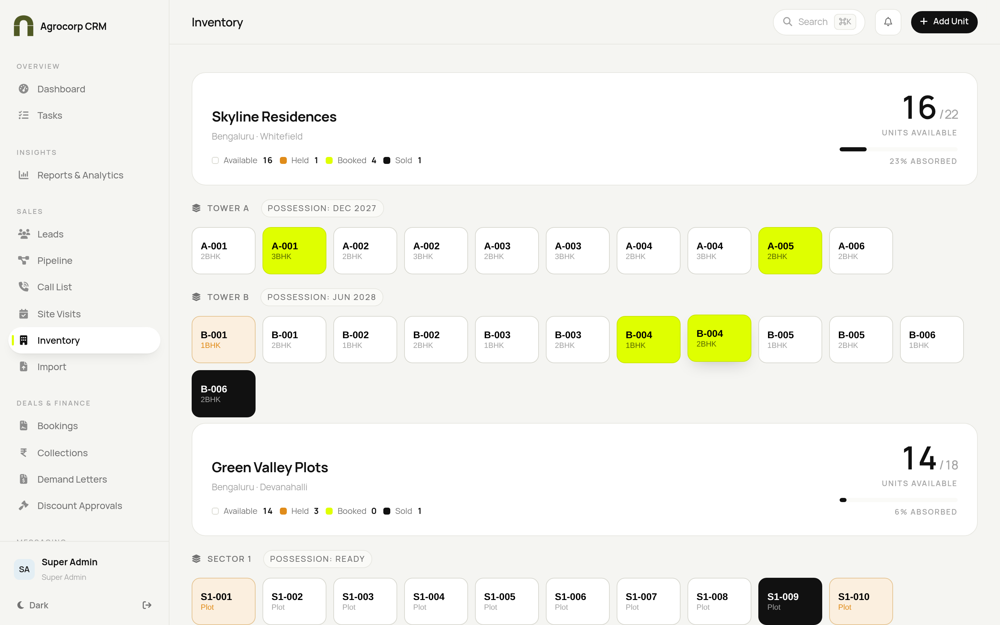
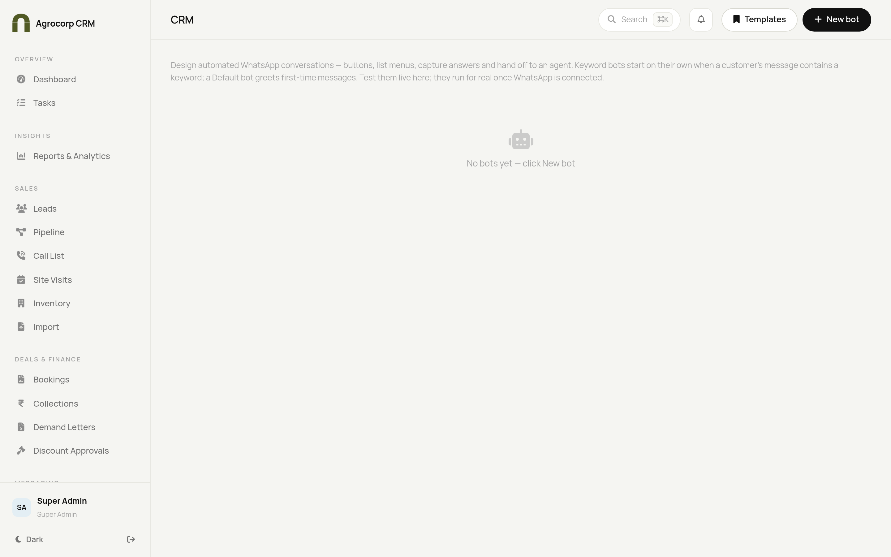
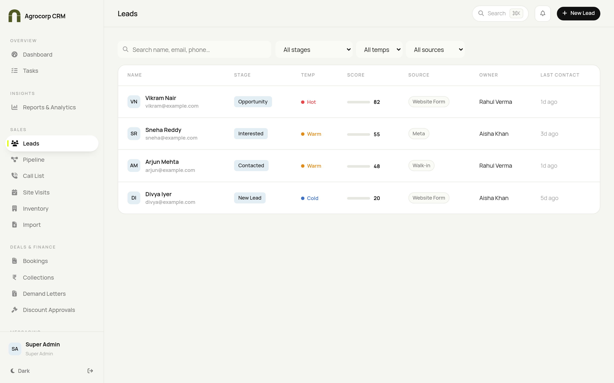
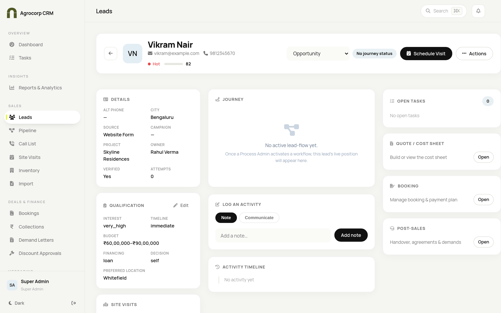
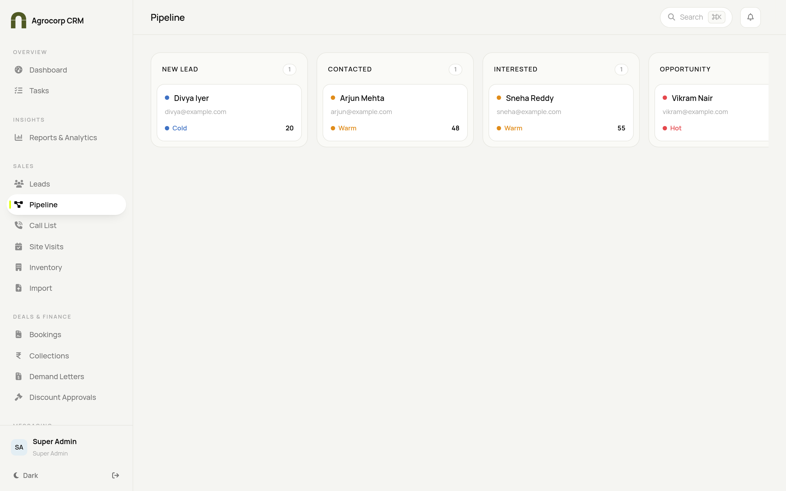

A complete, click-by-click guide: publish the CRM to your live domain, connect WhatsApp and email, and present the full lead-to-customer journey with confidence.
DeployConnectDemo
How to use this guide: do the parts in order. Do not skip. Replace anything in <angle brackets> with your real value.
Agrocorp CRM
Setup & Demo Guide
Before you begin — the 4 golden rules
Read these once. They prevent 90% of go-live problems.
#
Rule
Why it matters
1
Run php artisan key:generate only once. Never change APP_KEY after that.
If it changes, all saved integration passwords become unreadable and WhatsApp/email stop working.
2
The website must serve the public folder, not the project root.
Otherwise you get a blank page or a directory listing.
3
The Meta "Verify Token" must be identical to the one you type in the CRM.
The webhook won't connect if they differ by even one character.
4
Write down every value you create as you go.
You'll reuse DB credentials, Meta IDs/tokens and the Gmail app password across steps.
About the screenshots: pictures in this guide show the Agrocorp CRM screens you'll use. Steps that happen on another company's website (Hostinger, Meta/Facebook, Google) are written out click-by-click because those screens live on their sites, not inside the CRM.
What you need ready
A Hostinger plan with SSH access (VPS is best; Cloud/Business also work).
Your domain connected to Hostinger.
A terminal on your computer (Windows: PowerShell; Mac: Terminal).
A Facebook login and a Meta Business account (you can create the Business account during Part E).
A Gmail / Google Workspace mailbox you control (e.g. crm@yourdomain.com).
Your own phone (with WhatsApp) and email — you'll use these as the "demo customer" so real messages arrive on screen.
About 2–3 hours. Start early — Meta can take a while to approve message templates.
PART A — Put the code on Hostinger
Get the application files onto your server and point the website at them.
A1. Turn on SSH and connect On Hostinger
Log into Hostinger and open hPanel.
Left menu → Advanced → SSH Access. If disabled, click Enable.
Write down the SSH IP/Host, Port (often 65002) and Username.
On your computer's terminal type, then press Enter: ssh -p <Port> <Username>@<Host>
First time it asks to continue → type yes → Enter. Then type your Hostinger password (the characters stay hidden — that's normal).
Go to your domain folder: cd ~/domains/<yourdomain.com> (run ls ~/domains if unsure of the exact name).
A2. Copy the project into a folder named app
Easiest (GitHub):
In the Emergent chat, click Save to GitHub and copy the repository URL.
On the server run: git clone <your-repo-url> app
Wait for "done." — you now have ~/domains/<yourdomain.com>/app.
Alternative (ZIP upload): hPanel → File Manager → open your domain folder → create a folder app → Upload the ZIP → right-click → Extract. Confirm artisan, composer.json, public and routes sit directly inside app.
A3. Make the website show the public folder On Hostinger
hPanel → Websites → click your domain → Dashboard.
Find Website root / Document root (may be under Advanced / Website settings).
Set it to: domains/<yourdomain.com>/app/public and Save.
If your plan has no document-root setting (some serve only from public_html): ask Hostinger support to set the web root, or move the project outside public_html and copy the contents of app/public into public_html, editing the two require paths in public_html/index.php to point to ../app/vendor/autoload.php and ../app/bootstrap/app.php.
PART B — Install & configure the app
Run every command from inside the project folder: cd ~/domains/<yourdomain.com>/app
Speed it up: php artisan config:cache then php artisan route:cache
After any future change to .env, run php artisan config:clear then php artisan config:cache.
PART C — Turn on HTTPS and the scheduler
C1. HTTPS (SSL) On Hostinger
hPanel → Security → SSL → select your domain → Install SSL (free) → wait until "Active".
Turn on Force HTTPS so http:// automatically redirects to https://.
C2. Cron / scheduler — REQUIRED for reminders & campaigns On Hostinger
hPanel → Advanced → Cron Jobs → Create.
Frequency: Every Minute (or set all five boxes to *).
Command (replace the path; run which php to find your PHP path): cd /home/<user>/domains/<yourdomain.com>/app && php artisan schedule:run >> /dev/null 2>&1
Save.
Why this matters: without cron, payment reminders, visit reminders and scheduled WhatsApp/email campaigns will never fire.
PART D — First login & a quick health check

The Agrocorp CRM sign-in screen. If you see this at https://<yourdomain.com>, your deployment is working.
Open https://<yourdomain.com> in Chrome or Edge.
Sign in with the seeded admin account (email and password are in your credentials file).
Blank page or error? On the server run php artisan config:clear, then read the last lines of storage/logs/laravel.log. Usual causes: website root not pointed at /public (A3), wrong DB details (B3), or unwritable storage (rerun the chmod in B4).
PART E — Connect real WhatsApp (fast demo path)
You do not need Business Verification for the demo. Meta gives you a free test number that can message up to 5 phone numbers you verify. Use that.
E1. Create the Meta app On developers.facebook.com
Go to developers.facebook.com and log in with Facebook.
Top-right → My Apps → Create App.
"What do you want your app to do?" → choose Other → Next.
App type → Business → Next.
Name it Agrocorp CRM → pick your Business account if asked → Create app.
E2. Add WhatsApp & copy the credentials
In the app, find the WhatsApp product → click Set up.
You land on WhatsApp → API Setup. Copy and write down: the Temporary access token, the Phone number ID, and the WhatsApp Business Account ID (WABA ID).
Left menu → App settings → Basic → reveal and copy the App Secret.
Invent a Verify Token word, e.g. agrocorp_verify_2026. Write it down.
E3. Add YOUR phone as a recipient
On the API Setup screen, open the "To" dropdown → Manage phone number list.
Enter your WhatsApp number in full international format (e.g. +91XXXXXXXXXX).
Enter the confirmation code Meta sends you on WhatsApp. Repeat for teammates (max 5).
E4. Enter the credentials in the CRM

CRM → Integrations. Open the Meta WhatsApp Cloud card, fill the fields, Save, then use Run connection check.
CRM → Integrations → open Meta WhatsApp Cloud.
Fill: Access Token, Phone Number ID, WABA ID, App Secret, and Verify Token (= agrocorp_verify_2026).
Click Save, then Run connection check — you want "WhatsApp number verified" to be green.
Toggle the integration ON / Enable. Templates auto-sync.
E5. Set the webhook On developers.facebook.com
Meta app → WhatsApp → Configuration → Webhook → Edit.
Verify token: agrocorp_verify_2026 (exactly as in the CRM) → Verify and save.
Under Webhook fields → Manage → Subscribe to messages.
E6. Create & approve templates

CRM → WhatsApp Templates. Build a template, click Submit, and wait for status APPROVED. The pre-made hello_world template is always available.
CRM → WhatsApp Templates → New template → fill name (lowercase_with_underscores), body and buttons → Save draft → Submit.
Wait for the status to change to APPROVED (click Sync from Meta to refresh). Submit any templates you'll demo today.
Tip: quick-reply buttons can launch a chatbot — pick a bot in the button's "Launch bot" dropdown.
PART F — Connect real email (Gmail)
F1. Prepare the mailbox On myaccount.google.com
Go to myaccount.google.com → Security.
Turn on 2-Step Verification.
Open App passwords → App: Mail → Device: "Other" → type "Agrocorp CRM" → Generate. Copy the 16-character password.
F2. Enter it in the CRM
CRM → Integrations → Google / SMTP Email.
Host smtp.gmail.com, Port 587, Mailbox (your address), App Password (the 16 characters), From Name/Email.
Click Save → Test (want "SMTP authenticated") → Enable.
Real test: use "Forgot password" or add a lead with your email and check your inbox (and spam).
PART G — Create your demo people

CRM → Users & Roles. Add the people you'll act as during the demo.
CRM → Users & Roles → add a BDE and a Sales Head with real emails you can open.
Set memorable demo passwords and write them down.
Create the demo customer lead using your own phone + email so every WhatsApp/email lands on your devices on screen.
PART H — The night before
WhatsApp office hours: CRM → Inbound Rules → set business hours to cover the demo time, or turn office hours off. (Outside hours, bots reply with an "away" message.)
Pre-warm the AI dashboard: log in as a Sales user and open the Dashboard once (the first load is slow ~10–30s, then instant).
Templates: confirm the ones you'll show say APPROVED.
Full dry-run: do the whole demo once, end to end, with your phone + email as the customer.
Backup: screen-record the dry-run in case the internet misbehaves.
PART I — Run the demo (matches your 12 points)
A smooth order that tells a story from first contact to a paying customer.
1–2. Admin login & team
Log in as admin and show the company-wide dashboard, then open Users & Roles to show the team by department.

The dashboard — a live overview of the whole business (pipeline, hot/warm/cold, sources, integration health).
3–4. Project & inventory mapping

Inventory — projects, phases and colour-coded plot availability (Available / Held / Booked / Sold).
5–6. Integrations & templates
Open Integrations and show WhatsApp + Email connected (green), then show an APPROVED WhatsApp template. Optionally show the WhatsApp Bots builder.

WhatsApp Bots — a visual builder with message, buttons, list, capture, Book a visit and agent-handoff steps.
7–8. Lead capture & round-robin
Capture a lead from a source (website form / chatbot, or message your WhatsApp test number from your phone), and add one manually to show round-robin auto-assignment to a BDE.

Leads list — every captured lead with owner, temperature and stage.
9–10. BDE works the lead + live comms
Log in as the BDE, open the Lead Cockpit, qualify the lead and schedule a site visit — your phone receives the real WhatsApp confirmation. Show the activity timeline filling with sent messages and automations.

The full-width Lead Cockpit — details, qualification, journey, an activity composer (Note / WhatsApp / Email / Call) and the live timeline.
11. Pre-sales → sales → post-sales
Move the lead through the stages on the pipeline. Some stages ask for a couple of fields (budget, timeline) — pre-fill them so nothing blocks you on stage.

The pipeline — drag a lead between stages; transitions follow the business rules.
12. Booking, cost sheet & payments
Mark the deal Won → a booking is created and the unit is held/booked.
Generate the cost sheet, pick a payment plan, and record a payment — a serial receipt is produced.
To show a payment/visit reminder instantly (instead of waiting), an admin can SSH in and run: php artisan crm:reminders (and php artisan crm:email-scheduled, php artisan wa:campaigns:dispatch).
PART J — If something goes wrong (quick fixes)
Symptom
Fix
Blank page / HTTP 500
php artisan config:clear then read storage/logs/laravel.log. Usual causes: web root not on /public, wrong DB details, unwritable storage.
"419 page expired" at login
APP_URL must be your exact https domain; keep SESSION_SECURE_COOKIE=true; then php artisan config:clear.
WhatsApp won't send
Integrations → Run connection check. Red number = token expired (regenerate on Meta API Setup) or recipient not in your verified list (E3).
Webhook won't verify
The Verify Token in Meta must exactly match the CRM field; the site must be reachable on https.
Reminders/campaigns don't fire
The cron (C2) is missing or the PHP path is wrong. Run which php and use that full path; test with php artisan crm:reminders.
Emails not arriving
Re-Test SMTP; ensure 2-Step is on and you used the 16-character app password (not your login); check spam.
Template stuck PENDING
Meta is reviewing it; use hello_world meanwhile and click Sync from Meta to refresh.
Razorpay / e-sign
These stay simulated unless you add those provider keys — narrate them as "mock" for the demo.
Where to get help fast: Hosting steps → Hostinger 24/7 chat (hPanel → Help). WhatsApp/Meta → developers.facebook.com/docs/whatsapp/cloud-api. CRM side → the Integrations "Run connection check" tells you exactly what's missing.
You're ready. Deploy (A–C) → verify (D) → connect WhatsApp & email (E–F) → prep people (G–H) → present (I). Keep this guide open on a second screen during the demo.
 Agrocorp™
Agrocorp™